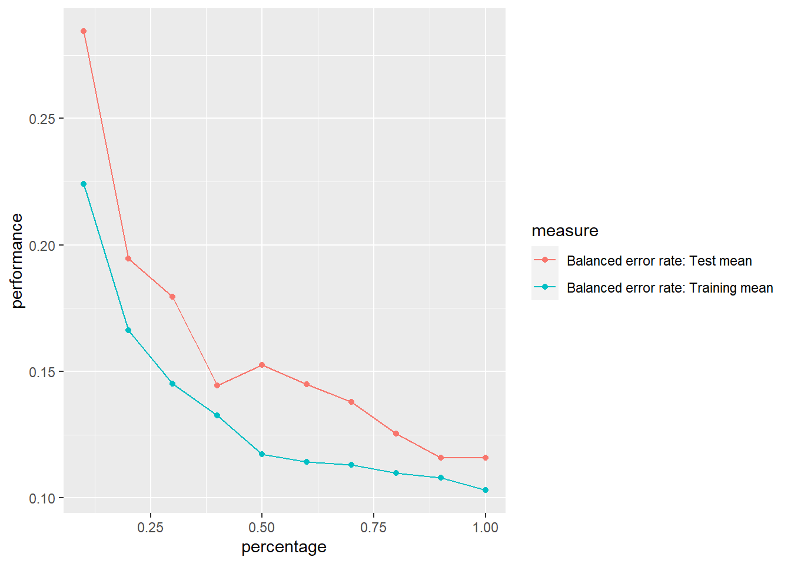
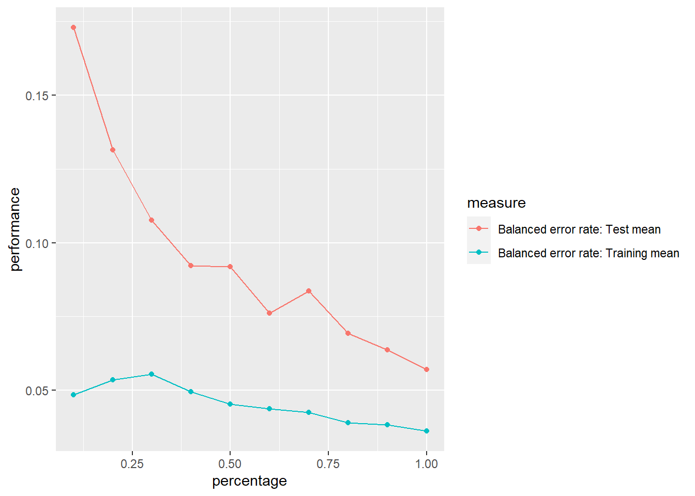
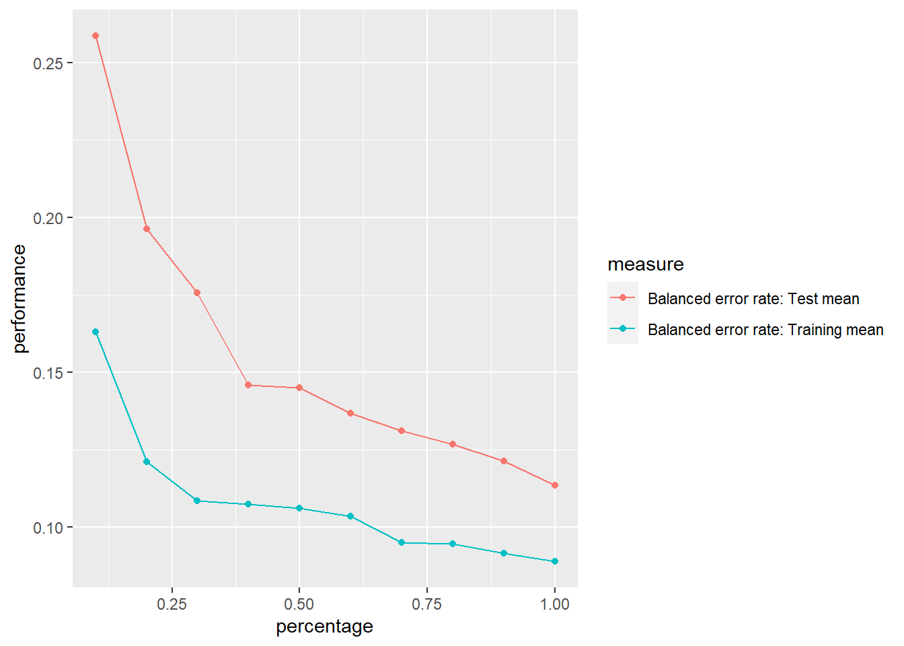
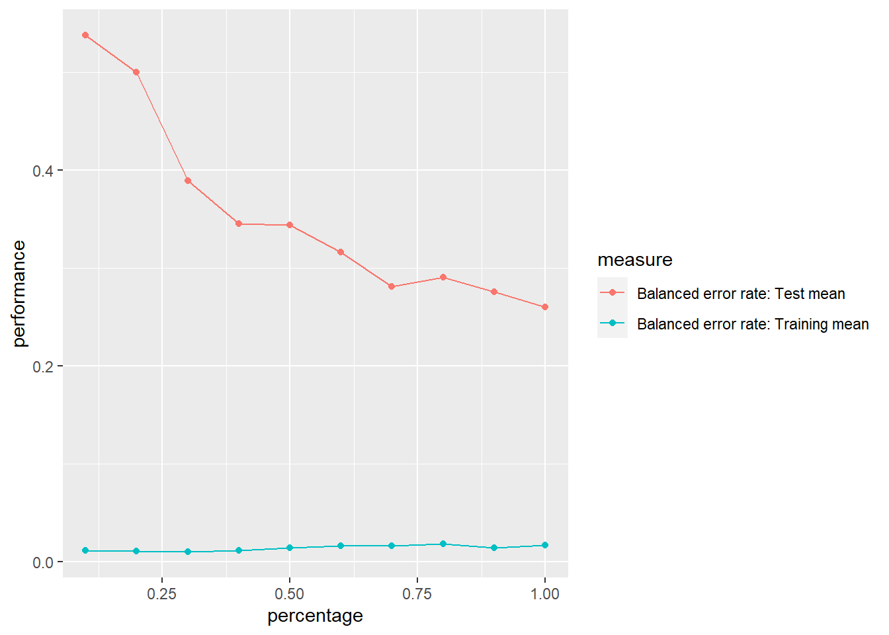
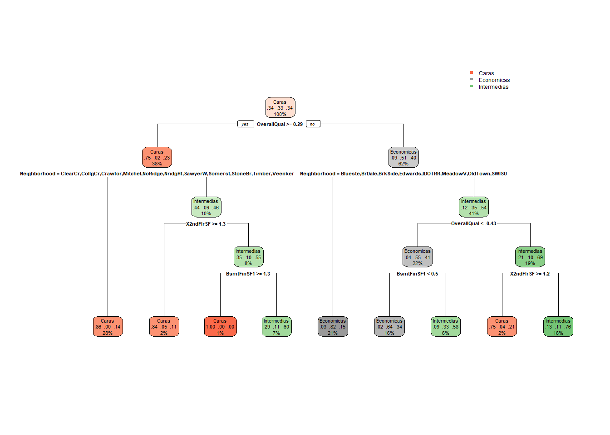
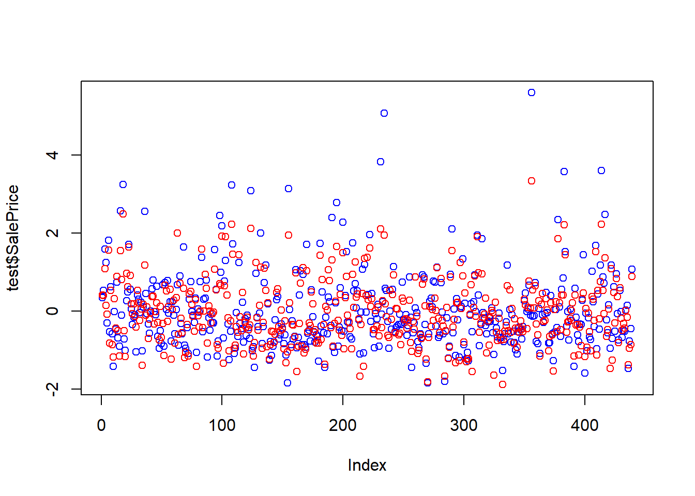
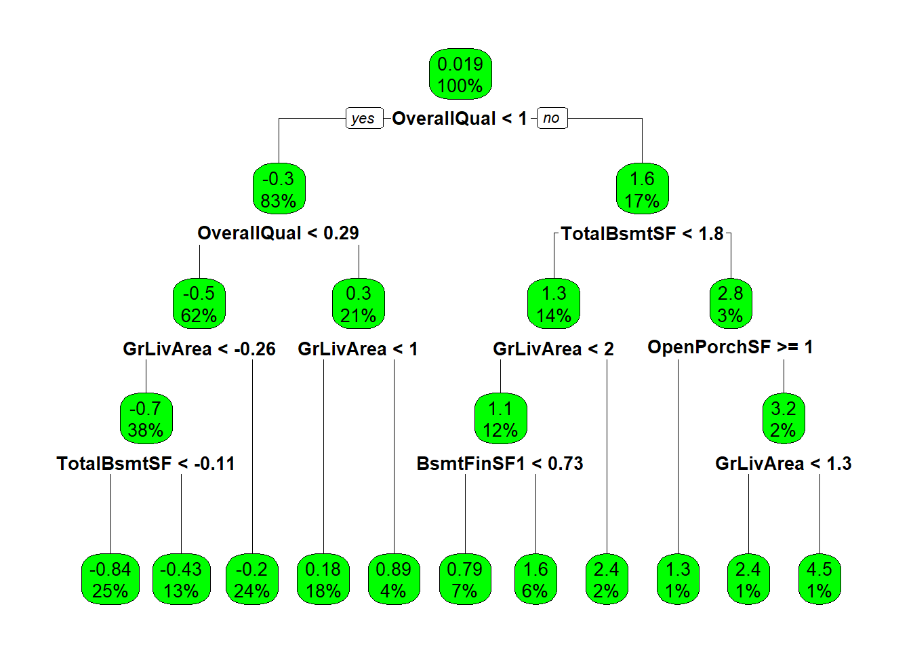
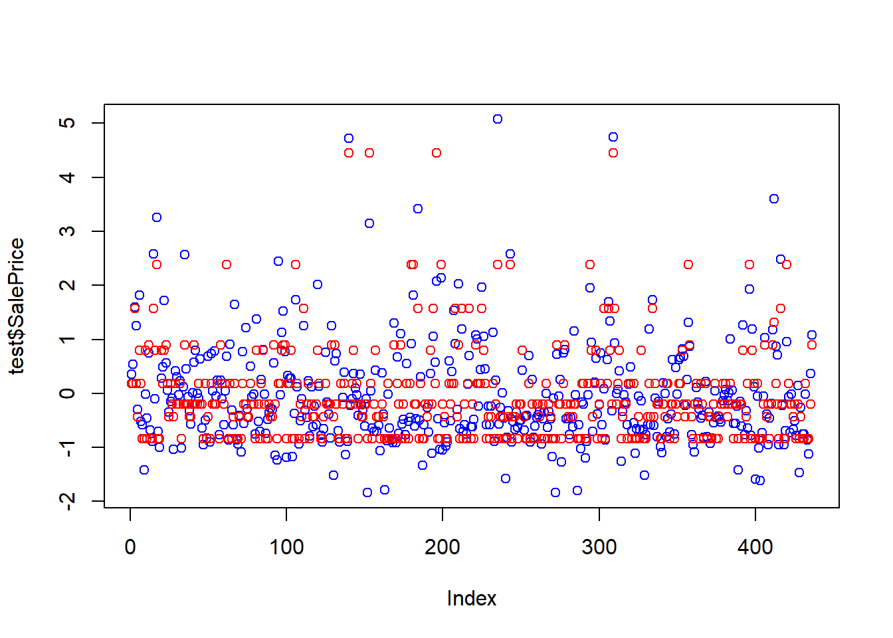

set.seed(123)
datos <- read.csv("train.csv")MD_HDT7
1. Dvisión de variables numéricas y obtención de data de prueba y entrenamiento
1.1 Transformación y división de variables
Al observar las variables se puede evidenciar que hay diferentes variables que tienen datos en diferentes escalas. Además, del análisis exploratorio previo se sabe que las variables no siguen distribuciones normales, así que se escalaron y normalizaron las variables.
Id MSSubClass MSZoning LotFrontage LotArea Street Alley LotShape LandContour
1 1 60 RL 65 8450 Pave <NA> Reg Lvl
2 2 20 RL 80 9600 Pave <NA> Reg Lvl
3 3 60 RL 68 11250 Pave <NA> IR1 Lvl
4 4 70 RL 60 9550 Pave <NA> IR1 Lvl
5 5 60 RL 84 14260 Pave <NA> IR1 Lvl
6 6 50 RL 85 14115 Pave <NA> IR1 Lvl
Utilities LotConfig LandSlope Neighborhood Condition1 Condition2 BldgType
1 AllPub Inside Gtl CollgCr Norm Norm 1Fam
2 AllPub FR2 Gtl Veenker Feedr Norm 1Fam
3 AllPub Inside Gtl CollgCr Norm Norm 1Fam
4 AllPub Corner Gtl Crawfor Norm Norm 1Fam
5 AllPub FR2 Gtl NoRidge Norm Norm 1Fam
6 AllPub Inside Gtl Mitchel Norm Norm 1Fam
HouseStyle OverallQual OverallCond YearBuilt YearRemodAdd RoofStyle RoofMatl
1 2Story 7 5 2003 2003 Gable CompShg
2 1Story 6 8 1976 1976 Gable CompShg
3 2Story 7 5 2001 2002 Gable CompShg
4 2Story 7 5 1915 1970 Gable CompShg
5 2Story 8 5 2000 2000 Gable CompShg
6 1.5Fin 5 5 1993 1995 Gable CompShg
Exterior1st Exterior2nd MasVnrType MasVnrArea ExterQual ExterCond Foundation
1 VinylSd VinylSd BrkFace 196 Gd TA PConc
2 MetalSd MetalSd None 0 TA TA CBlock
3 VinylSd VinylSd BrkFace 162 Gd TA PConc
4 Wd Sdng Wd Shng None 0 TA TA BrkTil
5 VinylSd VinylSd BrkFace 350 Gd TA PConc
6 VinylSd VinylSd None 0 TA TA Wood
BsmtQual BsmtCond BsmtExposure BsmtFinType1 BsmtFinSF1 BsmtFinType2
1 Gd TA No GLQ 706 Unf
2 Gd TA Gd ALQ 978 Unf
3 Gd TA Mn GLQ 486 Unf
4 TA Gd No ALQ 216 Unf
5 Gd TA Av GLQ 655 Unf
6 Gd TA No GLQ 732 Unf
BsmtFinSF2 BsmtUnfSF TotalBsmtSF Heating HeatingQC CentralAir Electrical
1 0 150 856 GasA Ex Y SBrkr
2 0 284 1262 GasA Ex Y SBrkr
3 0 434 920 GasA Ex Y SBrkr
4 0 540 756 GasA Gd Y SBrkr
5 0 490 1145 GasA Ex Y SBrkr
6 0 64 796 GasA Ex Y SBrkr
X1stFlrSF X2ndFlrSF LowQualFinSF GrLivArea BsmtFullBath BsmtHalfBath FullBath
1 856 854 0 1710 1 0 2
2 1262 0 0 1262 0 1 2
3 920 866 0 1786 1 0 2
4 961 756 0 1717 1 0 1
5 1145 1053 0 2198 1 0 2
6 796 566 0 1362 1 0 1
HalfBath BedroomAbvGr KitchenAbvGr KitchenQual TotRmsAbvGrd Functional
1 1 3 1 Gd 8 Typ
2 0 3 1 TA 6 Typ
3 1 3 1 Gd 6 Typ
4 0 3 1 Gd 7 Typ
5 1 4 1 Gd 9 Typ
6 1 1 1 TA 5 Typ
Fireplaces FireplaceQu GarageType GarageYrBlt GarageFinish GarageCars
1 0 <NA> Attchd 2003 RFn 2
2 1 TA Attchd 1976 RFn 2
3 1 TA Attchd 2001 RFn 2
4 1 Gd Detchd 1998 Unf 3
5 1 TA Attchd 2000 RFn 3
6 0 <NA> Attchd 1993 Unf 2
GarageArea GarageQual GarageCond PavedDrive WoodDeckSF OpenPorchSF
1 548 TA TA Y 0 61
2 460 TA TA Y 298 0
3 608 TA TA Y 0 42
4 642 TA TA Y 0 35
5 836 TA TA Y 192 84
6 480 TA TA Y 40 30
EnclosedPorch X3SsnPorch ScreenPorch PoolArea PoolQC Fence MiscFeature
1 0 0 0 0 <NA> <NA> <NA>
2 0 0 0 0 <NA> <NA> <NA>
3 0 0 0 0 <NA> <NA> <NA>
4 272 0 0 0 <NA> <NA> <NA>
5 0 0 0 0 <NA> <NA> <NA>
6 0 320 0 0 <NA> MnPrv Shed
MiscVal MoSold YrSold SaleType SaleCondition SalePrice
1 0 2 2008 WD Normal 208500
2 0 5 2007 WD Normal 181500
3 0 9 2008 WD Normal 223500
4 0 2 2006 WD Abnorml 140000
5 0 12 2008 WD Normal 250000
6 700 10 2009 WD Normal 1430002. Creación de clasificación de la variable de precios
p33 <- quantile(datos$SalePrice, 0.33)
p66 <- quantile(datos$SalePrice, 0.66)
datos <- datos %>%
mutate(clasificacion = ifelse(datos$SalePrice < p33, "Economicas",
ifelse(datos$SalePrice < p66, "Intermedias",
"Caras"
)
))
datos$clasificacion <- as.factor(datos$clasificacion)3. Uso de train y test previos
head(datos) OverallQual BsmtFinSF1 BsmtUnfSF X2ndFlrSF PoolArea MiscVal
1 0.65125610 0.57522774 -0.94426706 1.1614536 -0.06866822 -0.08765778
2 -0.07181151 1.17159068 -0.64100836 -0.7948909 -0.06866822 -0.08765778
3 0.65125610 0.09287536 -0.30153966 1.1889432 -0.06866822 -0.08765778
4 0.65125610 -0.49910256 -0.06164845 0.9369551 -0.06866822 -0.08765778
5 1.37432370 0.46340969 -0.17480468 1.6173231 -0.06866822 -0.08765778
6 -0.79487911 0.63223302 -1.13889578 0.5017028 -0.06866822 1.32328259
SalePrice Neighborhood HouseStyle LotConfig clasificacion
1 0.347154270 CollgCr 2Story Inside Caras
2 0.007285824 Veenker 1Story FR2 Intermedias
3 0.535970074 CollgCr 2Story Inside Caras
4 -0.515104565 Crawfor 2Story Corner Intermedias
5 0.869544659 NoRidge 2Story FR2 Caras
6 -0.477341404 Mitchel 1.5Fin Inside Intermediasporcentaje <- 0.7
set.seed(123)
corte <- sample(nrow(datos), nrow(datos) * porcentaje)
train <- datos[corte, ]
test <- datos[-corte, ]4. Genere varios modelos de SVM con diferentes kernels y distintos valores en c y en d
modeloSVM_L1<-svm(clasificacion~., data=train, cost=2^-5, kernel="linear")
modeloSVM_L2<-svm(clasificacion~., data=train, cost=0.5, kernel="linear")
modeloSVM_R1<-svm(clasificacion~., data=train, gamma=2^-5, kernel="radial")
modeloSVM_R2<-svm(clasificacion~., data=train, gamma=2^1, kernel="radial")5. Use los modelos para predecir el valor de la variable respuesta
Rprof(memory.profiling = TRUE)
predicciones_L1<-predict(modeloSVM_L1, test)
Sys.sleep(1)
Rprof(NULL)
pm1 <- summaryRprof(memory = "both")
Rprof(memory.profiling = TRUE)
predicciones_L2<-predict(modeloSVM_L2, test)
Sys.sleep(1)
Rprof(NULL)
pm2 <- summaryRprof(memory = "both")
Rprof(memory.profiling = TRUE)
predicciones_R1<-predict(modeloSVM_R1, test)
Sys.sleep(1)
Rprof(NULL)
pm3 <- summaryRprof(memory = "both")
Rprof(memory.profiling = TRUE)
predicciones_R2<-predict(modeloSVM_R2, test)
Sys.sleep(1)
Rprof(NULL)
pm4 <- summaryRprof(memory = "both")6. Haga las matrices de confusión respectivas
Modelo Lineal 1
confusionMatrix(test$clasificacion, predicciones_L1)Confusion Matrix and Statistics
Reference
Prediction Caras Economicas Intermedias
Caras 143 0 9
Economicas 0 126 14
Intermedias 4 18 125
Overall Statistics
Accuracy : 0.8975
95% CI : (0.8652, 0.9242)
No Information Rate : 0.3371
P-Value [Acc > NIR] : < 2.2e-16
Kappa : 0.8462
Mcnemar's Test P-Value : NA
Statistics by Class:
Class: Caras Class: Economicas Class: Intermedias
Sensitivity 0.9728 0.8750 0.8446
Specificity 0.9692 0.9525 0.9244
Pos Pred Value 0.9408 0.9000 0.8503
Neg Pred Value 0.9861 0.9398 0.9212
Prevalence 0.3349 0.3280 0.3371
Detection Rate 0.3257 0.2870 0.2847
Detection Prevalence 0.3462 0.3189 0.3349
Balanced Accuracy 0.9710 0.9138 0.8845Modelo Lineal 2
confusionMatrix(test$clasificacion, predicciones_L2)Confusion Matrix and Statistics
Reference
Prediction Caras Economicas Intermedias
Caras 148 0 4
Economicas 0 135 5
Intermedias 2 10 135
Overall Statistics
Accuracy : 0.9522
95% CI : (0.9278, 0.9701)
No Information Rate : 0.3417
P-Value [Acc > NIR] : < 2.2e-16
Kappa : 0.9282
Mcnemar's Test P-Value : NA
Statistics by Class:
Class: Caras Class: Economicas Class: Intermedias
Sensitivity 0.9867 0.9310 0.9375
Specificity 0.9862 0.9830 0.9593
Pos Pred Value 0.9737 0.9643 0.9184
Neg Pred Value 0.9930 0.9666 0.9692
Prevalence 0.3417 0.3303 0.3280
Detection Rate 0.3371 0.3075 0.3075
Detection Prevalence 0.3462 0.3189 0.3349
Balanced Accuracy 0.9864 0.9570 0.9484Modelo Radial 1
confusionMatrix(test$clasificacion, predicciones_R1)Confusion Matrix and Statistics
Reference
Prediction Caras Economicas Intermedias
Caras 144 0 8
Economicas 0 128 12
Intermedias 6 14 127
Overall Statistics
Accuracy : 0.9089
95% CI : (0.878, 0.9341)
No Information Rate : 0.3417
P-Value [Acc > NIR] : < 2.2e-16
Kappa : 0.8633
Mcnemar's Test P-Value : NA
Statistics by Class:
Class: Caras Class: Economicas Class: Intermedias
Sensitivity 0.9600 0.9014 0.8639
Specificity 0.9723 0.9596 0.9315
Pos Pred Value 0.9474 0.9143 0.8639
Neg Pred Value 0.9791 0.9532 0.9315
Prevalence 0.3417 0.3235 0.3349
Detection Rate 0.3280 0.2916 0.2893
Detection Prevalence 0.3462 0.3189 0.3349
Balanced Accuracy 0.9662 0.9305 0.8977Modelo Radial 2
confusionMatrix(test$clasificacion, predicciones_R2)Confusion Matrix and Statistics
Reference
Prediction Caras Economicas Intermedias
Caras 147 0 5
Economicas 25 96 19
Intermedias 42 18 87
Overall Statistics
Accuracy : 0.7517
95% CI : (0.7085, 0.7914)
No Information Rate : 0.4875
P-Value [Acc > NIR] : < 2.2e-16
Kappa : 0.6259
Mcnemar's Test P-Value : 1.04e-11
Statistics by Class:
Class: Caras Class: Economicas Class: Intermedias
Sensitivity 0.6869 0.8421 0.7838
Specificity 0.9778 0.8646 0.8171
Pos Pred Value 0.9671 0.6857 0.5918
Neg Pred Value 0.7666 0.9398 0.9178
Prevalence 0.4875 0.2597 0.2528
Detection Rate 0.3349 0.2187 0.1982
Detection Prevalence 0.3462 0.3189 0.3349
Balanced Accuracy 0.8323 0.8534 0.80047. Analice si los modelos estan sobreajustados
datos.task = makeClassifTask(data = train, target = "clasificacion")
rin2 = makeResampleDesc(method = "CV", iters = 10, predict = "both")
lrn = makeLearner("classif.svm", kernel = "linear", cost = 2^-5, type = "C-classification")
lc2 = generateLearningCurveData(learners = lrn, task = datos.task,
percs = seq(0.1, 1, by = 0.1),
measures = list(ber, setAggregation(ber, train.mean)), resampling = rin2,
show.info = FALSE)
plotLearningCurve(lc2, facet = "learner")
Al observar la curva de aprendizaje se puede concluir que el modelo NO sufre ni de overfitting, underfitting. Esto se dice ya que tanto la curva de test como la de training están relativamente cercas en todo el trayecto, además de que ambas llegan a converger en un mismo punto al finalizar las predicciones del modelo. Por lo mismo no hay necesidad de manejar el sobreajuste o desajuste.
datos.task = makeClassifTask(data = train, target = "clasificacion")
rin2 = makeResampleDesc(method = "CV", iters = 10, predict = "both")
lrn = makeLearner("classif.svm", kernel = "linear", cost = 0.5, type = "C-classification")
lc2 = generateLearningCurveData(learners = lrn, task = datos.task,
percs = seq(0.1, 1, by = 0.1),
measures = list(ber, setAggregation(ber, train.mean)), resampling = rin2,
show.info = FALSE)
plotLearningCurve(lc2, facet = "learner")
Al observar la curva de aprendizaje, podemos notar que la curva de training empieza a bajar mientras más datos hay. Por lo tanto este modelo tiene underfitting. Para mitigar esto se puede incrementar la C del modelo para tener un boundary más rígido, de forma que se tenga menos clasificaciones erróneas.
datos.task = makeClassifTask(data = train, target = "clasificacion")
rin2 = makeResampleDesc(method = "CV", iters = 10, predict = "both")
lrn = makeLearner("classif.svm", kernel = "radial", cost = 1, gamma = 2^-5, type = "C-classification")
lc2 = generateLearningCurveData(learners = lrn, task = datos.task,
percs = seq(0.1, 1, by = 0.1),
measures = list(ber, setAggregation(ber, train.mean)), resampling = rin2,
show.info = FALSE)
plotLearningCurve(lc2, facet = "learner")
Al observar la curva de aprendizaje se nota que la curva de training siempre va en descenso a pesar de que exista mayor cantidad de datos desde el inicio. Por lo mismo se puede considerar que este modelo posee overfitting. Para poder manejar el sobreajuste que posee este modelo se podría bajar la C para que sea más flexible y así poder aceptar mayor cantidad de errores.
datos.task = makeClassifTask(data = train, target = "clasificacion")
rin2 = makeResampleDesc(method = "CV", iters = 10, predict = "both")
lrn = makeLearner("classif.svm", kernel = "radial", cost = 1, gamma = 2^1, type = "C-classification")
lc2 = generateLearningCurveData(learners = lrn, task = datos.task,
percs = seq(0.1, 1, by = 0.1),
measures = list(ber, setAggregation(ber, train.mean)), resampling = rin2,
show.info = FALSE)
plotLearningCurve(lc2, facet = "learner")
Al observar la curva de aprendisaje, podemos notar que la curva de training esta muy mala ya que es casi un linea recta y la curva de test esta muy mala ya que esta muy alejada de la curva de training. Por lo tanto este modelo tiene overfitting. Ademas de que el test tiene un margen muy amplio, por lo tanto se puede decir que el modelo no es bueno. Para mitigar esto se puede disminuir la C del modelo para tener un boundary mas flexible, de forma que se tenga menos clasificaciones erróneas.
8. Comparación de resultados.
Efectividad y equivocaviones de resultados
Para los modelos lineales
Para el modelo Linel 1 tenemos un accuracy de 0.89. Esto nos indica que el modelo es basatnte bueno para hacer predicciones sobre casas caras, asi mismo se puede observaciones que el modelo no tiene tantas equivocaciones con un Sensitivity de 0.97 y un Specificity 0.96.
Para el modelo Linel 2 tenemos un accuracy de 0.95. Esto nos indica que el modelo es basatnte bueno para hacer predicciones sobre casas caras mejor que el modelo pasado, asi mismo se puede observaciones que el modelo no tiene tantas equivocaciones con un Sensitivity de 0.98 y un Specificity 0.98.
Para los modelos Radiales
El modelo 1 tiene un Accuracy de 0.90. Esto nos idndica que es un buen modelo, ademas de no estar overtifiado, esto lo podemos respaldar con la matris de confucion ya que podemos observar que los truePositive son bien identificados y con los que mayor se llego a equivocar fueron con los Flasosnegativos de Economicas.
En el modelo 2 se obtuvo un Accuracy de 0.75 lo cual nos indica que el modelo no es muy bueno para hacer predicciones, ademas de estar sobreajustado, esto lo podemos respaldar con la matris de confucion ya que podemos observar que los truePositive son mal identificados y con los que mayor se llego a equivocar fueron con los Flasosnegativos de Caras.
Tiempo de procesamiento
Tiempo de modelos
El modelo lineal 1 tuvo un tiempo de procesamiento de 0.66
El modelo lineal 2 tuvo un tiempo de procesamiento de 0.68
El modelo radial 1 tuvo un tiempo de procesamiento de 0.68
El modelo radial 2 tuvo un tiempo de procesamiento de 0.68
Conclusion
El mejor modelo es el lineal 1, porque es el unico que no posee ni sobre ni desajuste y posee un accuracy bastante elevado.
9. Comparación con modelos previos de clasificación.
train_1 <- select(train, -SalePrice)9.1 Árbol de decisión
modelo_arbol <- rpart(clasificacion ~ ., data = train_1, method = "class", maxdepth = 4)
rpart.plot(modelo_arbol)
pm4 <- summaryRprof(memory = "both")
y_pred <- predict(modelo_arbol, test, type = "class")
confusionMatrix(y_pred, test$clasificacion)Confusion Matrix and Statistics
Reference
Prediction Caras Economicas Intermedias
Caras 123 1 20
Economicas 6 121 39
Intermedias 23 18 88
Overall Statistics
Accuracy : 0.7563
95% CI : (0.7133, 0.7957)
No Information Rate : 0.3462
P-Value [Acc > NIR] : < 2.2e-16
Kappa : 0.6348
Mcnemar's Test P-Value : 0.009232
Statistics by Class:
Class: Caras Class: Economicas Class: Intermedias
Sensitivity 0.8092 0.8643 0.5986
Specificity 0.9268 0.8495 0.8596
Pos Pred Value 0.8542 0.7289 0.6822
Neg Pred Value 0.9017 0.9304 0.8097
Prevalence 0.3462 0.3189 0.3349
Detection Rate 0.2802 0.2756 0.2005
Detection Prevalence 0.3280 0.3781 0.2938
Balanced Accuracy 0.8680 0.8569 0.7291pm4$sampling.time[1] 0.689.2 Random Forest
modeloRF <- randomForest(clasificacion ~ ., train_1, na.action = na.omit)
pm5 <- summaryRprof(memory = "both")
ypred <- predict(modeloRF, newdata = test)
ypred <- factor(ypred)
confusionMatrix(ypred, test$clasificacion)Confusion Matrix and Statistics
Reference
Prediction Caras Economicas Intermedias
Caras 123 1 18
Economicas 3 114 32
Intermedias 26 25 97
Overall Statistics
Accuracy : 0.7608
95% CI : (0.7181, 0.8)
No Information Rate : 0.3462
P-Value [Acc > NIR] : <2e-16
Kappa : 0.6413
Mcnemar's Test P-Value : 0.3457
Statistics by Class:
Class: Caras Class: Economicas Class: Intermedias
Sensitivity 0.8092 0.8143 0.6599
Specificity 0.9338 0.8829 0.8253
Pos Pred Value 0.8662 0.7651 0.6554
Neg Pred Value 0.9024 0.9103 0.8282
Prevalence 0.3462 0.3189 0.3349
Detection Rate 0.2802 0.2597 0.2210
Detection Prevalence 0.3235 0.3394 0.3371
Balanced Accuracy 0.8715 0.8486 0.74269.3 Naive Bayes
modeloNB <- naiveBayes(clasificacion ~ ., train_1)
pm6 <- summaryRprof(memory = "both")
ypred <- predict(modeloNB, newdata = test)
ypred <- factor(ypred)
confusionMatrix(ypred, test$clasificacion)Confusion Matrix and Statistics
Reference
Prediction Caras Economicas Intermedias
Caras 85 0 13
Economicas 64 140 131
Intermedias 3 0 3
Overall Statistics
Accuracy : 0.5194
95% CI : (0.4715, 0.567)
No Information Rate : 0.3462
P-Value [Acc > NIR] : 8.105e-14
Kappa : 0.2877
Mcnemar's Test P-Value : < 2.2e-16
Statistics by Class:
Class: Caras Class: Economicas Class: Intermedias
Sensitivity 0.5592 1.0000 0.020408
Specificity 0.9547 0.3478 0.989726
Pos Pred Value 0.8673 0.4179 0.500000
Neg Pred Value 0.8035 1.0000 0.667436
Prevalence 0.3462 0.3189 0.334852
Detection Rate 0.1936 0.3189 0.006834
Detection Prevalence 0.2232 0.7631 0.013667
Balanced Accuracy 0.7570 0.6739 0.505067Al comparar estos modelos con el mejor modelo de SVM, que fue el modelo lineal 1, es posible observar que este fue el mejor. Tuvo un accuracy de 0.89, fue el mejor modelo para clasificación de casas caras con una sensitivity de 0.97 y specificity de 0.96. Para clasificación de true positives de económicas el mejor modelo fue el de naive bayes, pero este tuvo un accuracy de 0.52, ligeramente mejor que un modelo aleatorio. Casi todos los modelos anteriores fueron muy malos para clasificación de casas intermedias, solo naive bayes tuvo un specificity de 0.98, pero en general, SVM fue superior. De los tres modelos anteriores, Random Forest tuvo el mejor accuracy con 0.76.
10. Modelos de Regresion
10.1 Modelo de regresión SVM
Se realizaron dummies de las variables por el encoding de la regresión de SVM. 3
hot_encoded <- dummyVars(~Neighborhood+HouseStyle+LotConfig, data = train)
train_hot <- data.frame(predict(hot_encoded, newdata = train))
train <- cbind(train, train_hot)
train <- train[, variables_m2]
hot_encoded <- dummyVars(~Neighborhood+HouseStyle+LotConfig, data = test)
test_hot <- data.frame(predict(hot_encoded, newdata = test))
test <- cbind(test, test_hot)
test <- test[, variables_m2]modelo_svm <- svm(SalePrice ~ ., data = train, type = "eps-regression", kernel = "linear")
predicciones <- predict(modelo_svm, newdata = test)
mse(predicciones, test$SalePrice)[1] 0.2022909svmrmse <- rmse(predicciones, test$SalePrice)
svmrmse[1] 0.4497676plot(test$SalePrice, col = "blue")
points(predicciones, col = "red")
r_squared <- postResample(predicciones, test$SalePrice)["Rsquared"]
r_squared Rsquared
0.8063071 predicciones_clasificacion <- ifelse(predicciones < p33, "Economicas",
ifelse(predicciones < p66, "Intermedias", "Caras"))
# Crear un data frame con las predicciones y sus respectivas categorías
predicciones_df <- data.frame(Predicciones = predicciones,
Clasificacion = factor(predicciones_clasificacion,
levels = c("Economicas", "Intermedias", "Caras")))
head(predicciones_df) Predicciones Clasificacion
1 0.41822874 Caras
3 0.39271983 Caras
7 1.08184704 Caras
14 0.14958962 Caras
15 -0.07860039 Intermedias
21 1.56839290 Caras10.2 Regresión lineal simple
sale_simple_model <- lm(SalePrice ~ OverallQual, data = train)Luego de haber entrenado el modelo se mostraron sus características.
summary(sale_simple_model)
Call:
lm(formula = SalePrice ~ OverallQual, data = train)
Residuals:
Min 1Q Median 3Q Max
-2.4635 -0.3745 -0.0235 0.2483 5.0261
Coefficients:
Estimate Std. Error t value Pr(>|t|)
(Intercept) -0.008682 0.019471 -0.446 0.656
OverallQual 0.783163 0.019432 40.302 <2e-16 ***
---
Signif. codes: 0 '***' 0.001 '**' 0.01 '*' 0.05 '.' 0.1 ' ' 1
Residual standard error: 0.6221 on 1019 degrees of freedom
Multiple R-squared: 0.6145, Adjusted R-squared: 0.6141
F-statistic: 1624 on 1 and 1019 DF, p-value: < 2.2e-16predLM <- predict(sale_simple_model, newdata = test)
RMSE(predLM, test$SalePrice)[1] 0.588340110.3 Regresión lineal múltiple
porcentaje <- 0.7
set.seed(123)
datos1 <- data.frame(datos1)
corte <- sample(nrow(datos1), nrow(datos1) * porcentaje)
train <- datos1[corte, ]
test <- datos1[-corte, ] fitMLM_Sale <- lm(train$SalePrice ~ ., data = train)summary(fitMLM_Sale)
Call:
lm(formula = train$SalePrice ~ ., data = train)
Residuals:
Min 1Q Median 3Q Max
-6.6289 -0.2268 0.0032 0.2071 3.4508
Coefficients:
Estimate Std. Error t value Pr(>|t|)
(Intercept) -0.008982 0.016067 -0.559 0.576280
OverallQual 0.484276 0.022128 21.885 < 2e-16 ***
MasVnrArea 0.083365 0.018465 4.515 7.09e-06 ***
BsmtFinSF1 0.115456 0.018862 6.121 1.33e-09 ***
GrLivArea 0.271645 0.021696 12.521 < 2e-16 ***
Fireplaces 0.044332 0.018479 2.399 0.016621 *
WoodDeckSF 0.072914 0.016848 4.328 1.66e-05 ***
OpenPorchSF 0.003295 0.017259 0.191 0.848613
TotalBsmtSF 0.085887 0.022206 3.868 0.000117 ***
---
Signif. codes: 0 '***' 0.001 '**' 0.01 '*' 0.05 '.' 0.1 ' ' 1
Residual standard error: 0.5116 on 1007 degrees of freedom
Multiple R-squared: 0.7479, Adjusted R-squared: 0.7459
F-statistic: 373.4 on 8 and 1007 DF, p-value: < 2.2e-16regresion_rmse <- RMSE(predict(fitMLM_Sale, newdata = test),test$SalePrice)
regresion_rmse[1] 0.420517710.4 Arbol de clasificaion
regression_tree <- rpart(formula = SalePrice ~ ., data = train)
rpart.plot(regression_tree, box.palette = "green")
ypred <- predict(regression_tree, newdata = test)
mse <- mean((ypred - test$SalePrice)^2)
# Calculate SSE
SSE <- sum((ypred - test$SalePrice)^2)
# Calculate TSS
TSS <- sum((test$SalePrice - mean(test$SalePrice))^2)
# Calculate R-squared value
r2 <- 1 - SSE / TSS
rmse <- RMSE(ypred, test$SalePrice)
# Print the results
cat("R-squared:", r2, "\n")R-squared: 0.7016104 cat("RMSE:", rmse, "\n")RMSE: 0.5258853 plot(test$SalePrice, col = "blue")
points(ypred, col = "red")
Comparacion de los modelos
El modelo de del SVM fue el mejor de todos obteniendo un r-cuadrado de 0.80 y un RMSE de 0.44 que fue mayoe a los demas modelos con los siguientes valores: El modelo de regresión lineal múltiple obtuvo un r-cuadrado de 0.745 y un RMSE de 0.42. El modelo de regresión lineal simple obtuvo un r-cuadrado de 0.61 y un RMSE de 0.58. El modelo de árbol de clasificación obtuvo un r-cuadrado de 0.7 y un RMSE de 0.52.